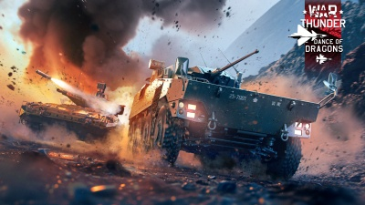

A War Thunder egy komplex és részletes katonai szimulátor, amely lehetővé teszi a játékosok számára, hogy különböző járművekkel – például repülőgépekkel, tankokkal és hadihajókkal – vegyenek részt csatákban. A játék a második világháborútól kezdve a hidegháborúig terjedő időszakra összpontosít, és rengeteg különböző nemzet haderejét felöleli. A játékmenet változatos módokat kínál, beleértve a történelmi csatákat, a valós idejű összecsapásokat és a szimulátor módot, amely a legnagyobb realizmust biztosít. A grafika lenyűgöző, a járművek és környezetek rendkívül részletesek, és a játék fizikája is igyekszik a valósághoz hűen modellezni a harci szituációkat. A War Thunder közössége aktív, és a játék folyamatosan frissül új tartalmakkal, eseményekkel és járművekkel. Ezáltal a játék mindig új kihívásokat kínál, legyen szó egyéni játékosokról vagy csapatok versengéséről. A War Thunder tehát nemcsak a történelem és a hadviselés iránt érdeklődők számára izgalmas, hanem a szimulátor játékok kedvelőinek is. Ráadásul a készítője a Gaijin entertaiment is magyar
A Dance of Dragons updateben 42 új jármű jött a játékba. A War Thunder "Dance of Dragons" frissítése izgalmas újdonságokat hozott a játékosok számára! A frissítés középpontjában a légierő áll, új, részletesen kidolgozott repülőgépekkel, köztük a híres WWII-era modellekkel.Dance of dragons Emellett számos új harcjárművet is bemutat, amelyek a különböző hadszínterek kihívásait célozzák meg. A frissítés tartalmaz új pályákat, izgalmas küldetéseket és a grafikai fejlesztéseket, amelyek még élethűbbé teszik a harcokat. Az új mechanikák és a dinamikus időjárási viszonyok tovább fokozzák a játék stratégiai mélységét, így mindenki megtalálhatja a kedvére való kihívást!